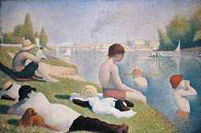
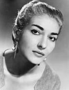
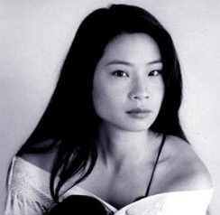

En su corta vida, Georges-Pierre Seurat fue un innovador en una época de innovadores en el Arte. Este pintor francés fue el líder de un novimiento llamado neoimpresionismo a finales del siglo XIX. En contraste con las gruesas pinceladas del impresionismo, Seurat desarrolló una técnica llamada puntillismo o divisionismo. mediante este método, empleaba pequeños puntos o trazos de colores opuestos para crear los sutiles cambios en el cuadro. Seurat fue un artista científico, en el sentido que pasó gran parte de su vida investigando la forma en que los distintos colores y los efectos lineales afectaban al aspecto o a la textura de la tela. Era muy concienzudo en su trabajo, su técnica requería mucho más tiempo para producir una obra de arte. Aún así, produjo más de 500 pinturas o dibujos.
Seurat nació en Paris el 2 de diciembre de 1859. Estudió en la Escuela de Bellas Artes en 1878 y 1879. Durante sus estudios, estuvo muy influido por las obras de Rembrandt y Francisco de Goya.
De carácter muy reservado, Seurat, una vez establecido como artista, pintaba una obra de grandes dimensiones al año, hasta pintar siete obras monumentales. Simultáneamente produjo 60 pinturas de pequeño formato. De costumbres ordenadas, pasaba los inviernos en París y los veranos en la costa norte de Francia. En 1891, a los 31 años, murió repentinamente en París de difteria.
María Callas, cuyo verdadero nombre era Cecilia Sophia Anna Maria Kalogeropoulou, nació en la ciudad de Nueva York el 2 de Diciembre de 1923, de padres griegos. Debido a las dificultades económicas de su familia, se volvió a Grecia con su madre en 1937, inscribiéndose en el Conservatorio de Atenas. Debutó en 1941 en Atenas, donde cantó varios años antes de realizar su debut italiano en Verona en el año 1947. En los primeros días de su carrera, Maria Callas representó una gran variedad del repertorio, pero enseguida se concentró en las óperas italianas, particularmente en el bel canto con obras de Rossini, Bellini, Donizetti y el primer Verdi.
En 1949, Maria Callas conoció a Giovanni Meneghini con el que se casó. Giovanni Meneghini junto al director Tullio Serafin guiaron su carrera. Estuvieron diez años casados. Debutó en La Scala de Milán en 1950 con Aida. Su primera aparición en Nueva York fue en 1956 representando la ópera de Bellini Norma, un papel que se convirtió en su especialidad.
Maria Callas estuvo siempre muy interesada en revitalizar aquellas óperas que habían sido olvidadas, representando obras olvidadas de Cherubini, Gluck, Haydn y Spontini. Trabajó con algunos de los más importantes directores de escena y orquesta del momento, destacando Luchino Visconti, Leonard Bernstein, Carlo Maria Giulini y Herbert von Karajan. También desarrolló una gran relación musical con gran cantidad de cantantes, principalmente con el tenor Giuseppe di Stefano y el barítono Tito Gobbi, apareciendo con mucha frecuencia en escena y en grabaciones. Maria Callas era extremadamente autocrítica y temperamental por lo que tenía frecuentes altercados con empresarios y directores de los teatros.
En 1959, Maria Callas conoció al naviero griego Aristóteles Onassis, abandonando a su marido. Tuvo un breve retiro durante esta relación pero cuando volvió de nuevo a escena, su voz evidenciaba signos de decadencia. En 1965, realizó su última representación operística con Tosca en el Covent Garden de Londres. En ese momento tenía 41 años. Tres años más tarde, Aristóteles Onassis dejó a Maria Callas por Jacqueline Kennedy.
Durante la última década de su vida, vivió prácticamente recluida en París. Realizó pequeñas apariciones con di Stefano e impartió una serie de clases maestras en el Juilliard School de Nueva York entre los años 1971 y 1972. Murió en París el 16 de Septiembre de 1977. La causa de su muerte nunca estuvo totalmente determinada.
Lucy Liu es hija de inmigrantes chinos (su padre es ingeniero y su madre bioquímica) que se habían trasladado desde su país hasta el barrio de Queens en Nueva York. Estudió secundaria en el famoso Instituto Stuyvesant de Manhattan y posteriormente estudió lenguas y culturas asiáticas en la Universidad de Michigan, lugar en donde comenzó a coquetear con la interpretación al intervenir en una representación teatral de "Alicia en el país de las maravillas". A finales de los año 80 se trasladó a Los Angeles para probar fortuna en Hollywood. Tras muchas audiciones y castings logró aparecer en episodios de varias series televisivas como "Sensación de vivir", "La ley de los Angeles", "Urgencias" o "Expediente X". Tras participar en películas de escaso o nulo renombre, Lucy alcanzó la notoriedad pública gracias a intervenir en la famosa serie "Ally McBeal", a la que se incorporó en el año 1998. A finales de los años 90 ya obtuvo importantes papeles cinematográficos, en películas como "Jugando a tope", "Shangai Noon" o la taquillera "Los Angeles de Charlie". Su papel importante más reciente es en la película "Kill Bill" de Quentin Tarantino.
Britney Spears nació el 2 de diciembre de 1981, en Kentwood, Luisiana. Britney comenzó su carrera cantando en el coro de la Iglesia local de su ciudad natal y actuando en el colegio, cuando solo tenía cuatro años. Pero su empuje profesional la vino a los ocho años, tras presentarse a un casting para Disney Channel en Australia. No consiguió superar esta prueba, ni alcanzó el pequeño papel que la ofrecían debido a su escasa edad, pero sin embargo, tuvo la suerte de que el productor de MMC le ayudara a conseguir un representante en Nueva York. Los tres años siguientes los pasó estudiando en The Professional Performing Art School de Nueva York.
A la edad de once años fue contratada por Disney Channel para realizar el show durante dos años. Tras realizar este trabajo, regresó a Kentwood, su pueblo natal, para acudir a sus clases de secundaria. A los quince años volvió a Nueva York para lograr la meta de convertirse en una gran cantante. Su primer disco ”Baby One More Time“ salió al mercado el 12 de enero de 1999. Fué número uno en más de veinte países, vendiendo más de seis millones de copias en todo el mundo, y consiguiendo el récord de conseguir un número uno en Estados Unidos la misma semana en la que se lanzó. Su segundo álbum, "Oops!...I Did It Again" salió en mayo de 2000 y consiguió ser el disco de solista femenina más vendido en su primera semana (1.300.000 copias). Posteriormente ha publicado los álbumes "Britney" (2001) e "In the zone" (2003).
Última modificación: 1 de diciembre de 2003